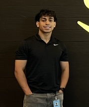

Gaurav Kumar
Software engineering & AI/ML
I’m a fourth-year Computer Science & Engineering student at UCLA, interested in building reliable software and practical AI/ML systems. In my free time, you’ll find me at the gym, playing ping pong, or playing poker.

Experience
-
Amazon Web Services
Software Development Engineer Intern
–
Built OpenSearch vector deduplication that cut memory use by 50% and merge I/O by 66%. Reduced segment indexing time by 45% and fixed a production crash in compressed vector indexing.
-
Property Risk Profile
Software Engineer · Part-time
–
Automated disclosure reviews with Python and GPT-4, reducing manual review time by 80%. Built a YOLO-based property view scoring system and mentored two interns.
-
Cargo Velocity
Junior Analyst · Part-time
–
Automated research workflows and analyzed data to support consulting projects and reduce manual effort.
Projects
-
ClubApply.ai
Won first place at the Bruin AI × AWS Generative AI Hackathon. Built a React and FastAPI app using AWS Bedrock to tailor club applications and coach interview responses.
React · Python · FastAPI · AWS Bedrock
-
DIDUC
Built a React Native app for shared memories. Designed Express APIs and MongoDB data models connecting events, photos, and users, with Firebase authentication and cloud storage.
React Native · Expo · MongoDB · Firebase
-
Spy Gadget
Led software development for a wearable sensor dashboard with under 200 ms latency. Connected camera and sensor streams and used the OpenAI API to interpret clues.
React · Node.js · Socket.IO · MQTT · OpenAI API